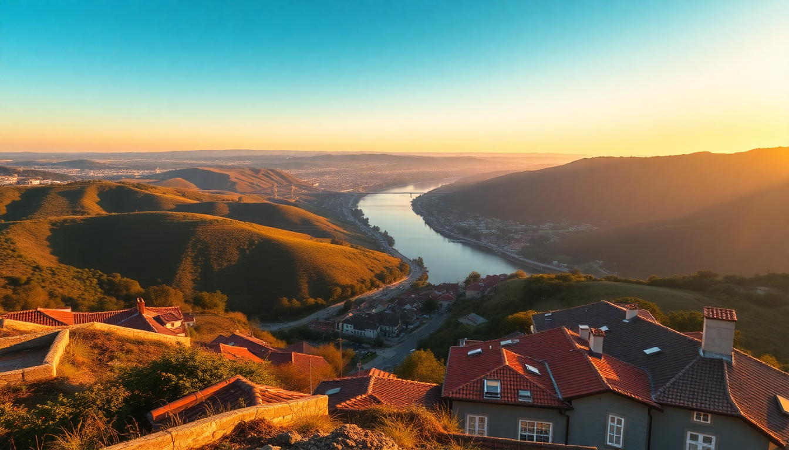

Best Day Trips from Porto: Douro, Guimarães & Braga

Porto’s a great base, but after two days of port wine and riverside strolls, I was itching to see what lay beyond. I spent a week taking three separate day trips—Douro Valley, Guimarães, and Braga—and here’s exactly what worked, what didn’t, and how to do each without wasting time or money.
Why take a day trip from Porto instead of staying in the city?
Porto packs a lot into a small area, but the real Portugal—the terraced vineyards, the birthplace of the nation, the baroque churches—starts about an hour outside. Each of these three destinations offers something the city can’t. Douro Valley gives you vineyard views and port tastings without the tasting-room crowds of Vila Nova de Gaia. Guimarães drops you into medieval alleyways where Portugal was literally born. Braga delivers Roman ruins and a staircase that’ll test your quads. All three are doable in a single day from Porto, and you’ll be back in time for a Francesinha dinner.
How do you get to the Douro Valley from Porto?
I took the train from São Bento station to Pinhão—that’s the scenic route along the Douro River, and it’s about two hours each way. The Linha do Douro runs multiple times daily, and the stretch between Régua and Pinhão is the photogenic part: vineyards climbing steep hills, the river curving below, small stone stations. I booked a second-class ticket for around €10 one-way.
- Train from São Bento to Pinhão — sit on the left side for river views
- Boat tour from Porto — pricier (€50–€70) but includes lunch and wine tastings; we skipped it because the train felt more authentic
- Organized van tour — good if you want multiple winery stops without driving; we saw groups from GetYourGuide at Quinta do Seixo
Once in Pinhão, I walked to Quinta do Seixo (Sandeman’s estate) for a tasting—€15 for three ports and a tour of the terraced vineyards. The views from their terrace over the river are the real draw. For lunch, I ate at Veladres in Pinhão village—grilled bacalhau with potatoes, €12, no frills, honest food.
Is Guimarães worth a full day?
Yes, but you don’t need more than six hours. Guimarães is a 50-minute train from Porto’s Campanhã station (€4 each way). The historic center is compact and walkable. I arrived around 10 a.m. and had seen the castle, palace, and main square by 2 p.m.
- Guimarães Castle — €6 entry; the 10th-century fortress where Portugal’s first king, Afonso Henriques, was born. Climb the walls for a view over the city.
- Palace of the Dukes of Braganza — €5; feels like a medieval manor house with tapestries and giant fireplaces. Overrated? Slightly—the furniture is sparse—but the architecture is solid.
- Largo da Oliveira — the main square, named after an olive tree. Grab a coffee at Café Milenário and watch the world go by.
I had lunch at Tasquinha do Saber, a tiny spot tucked off the square. The cozido à portuguesa (meat and vegetable stew) was heavy but perfect for a cool day. Skip the tourist restaurants on the main drag—they’re overpriced and the food is reheated.
What should you see in Braga in one day?
Braga is 30–40 minutes by train from Porto (€3.50 each way, frequent departures). The city has two main draws: the Bom Jesus do Monte sanctuary and the historic center. I did both in a single day without rushing.
- Bom Jesus do Monte — a baroque staircase with 577 steps. I walked up (it’s steep, but there are shaded rest spots) and took the water-powered funicular down (€1.50). The church at the top is free, and the gardens behind it are quiet and well-kept.
- Braga Cathedral (Sé de Braga) — €3 entry; Portugal’s oldest cathedral, with a mix of Romanesque and Gothic styles. The cloister is worth the extra €2.
- Rua do Souto — the main pedestrian street for shopping and people-watching. Stop at Café Vianna for a pastel de nata and a galão (Portuguese latte).
For lunch, I ate at Taberna do Belga—a small spot near the cathedral serving francesinha (the Braga version is less greasy than Porto’s). It was €8 and filling. If you’re looking for something lighter, try Brasão Cervejaria for a bifana sandwich.
Can you combine Guimarães and Braga in one day?
I tried this on a Wednesday and regretted it. They’re only 20 minutes apart by train, but both cities deserve at least four hours each. I ended up rushing through Braga’s cathedral and skipping the Bom Jesus gardens. If you’re short on time, pick one. If you have two days, do Guimarães on day one and Braga on day two—they’re close enough that you could stay in Braga overnight, but I preferred returning to Porto each evening.
Which day trip is best for wine lovers?
Douro Valley, no contest. Guimarães and Braga have wine bars (I liked Cervejaria do Castelo in Guimarães for a local vinho verde), but the Douro is the region. If you’re serious about wine, skip the train and book a small-group tour that stops at two or three quintas. I saw a group from GetYourGuide’s Douro Valley tour at Quinta do Seixo—they had a guide explaining the terroir while I was just pointing at grapes. The train is better for scenery; the tour is better for learning.
FAQ
Is the Douro Valley overrated? It’s not overrated, but it’s hyped. The train ride is stunning, and the wine is excellent, but the tasting rooms in Pinhão are small and can get crowded in summer. Go in April or October for fewer tourists and cooler weather. Skip the river cruise from Porto—it’s expensive and you see the same views from the train for a fraction of the cost.
Do I need to book train tickets in advance? For the Douro Valley, yes—especially if you want a seat on the left side with the river view. I booked mine a day ahead on the CP website. For Guimarães and Braga, you can buy tickets at the station; trains run every 30–60 minutes and rarely sell out.
What’s the best time of year for these trips? Spring (March–May) and fall (September–October) are ideal. Summer in Braga and Guimarães is hot and crowded—the Bom Jesus steps become a sweat fest. Winter is fine but cold; pack layers. I did all three in early November and had mostly clear skies and empty streets.
Conclusion
- Douro Valley is best by train to Pinhão for the views, with a tasting at Quinta do Seixo and lunch at Veladres. Skip the boat tours.
- Guimarães is a half-day trip—see the castle, palace, and Largo da Oliveira, then eat at Tasquinha do Saber. Don’t combine it with Braga.
- Braga needs a full day for Bom Jesus do Monte and the cathedral. Walk the steps, ride the funicular down, and grab coffee at Café Vianna.
- Train travel works for all three—CP is reliable, cheap, and drops you in the center of each town.
- Book Douro train tickets early; for Guimarães and Braga, buy same-day at the station.